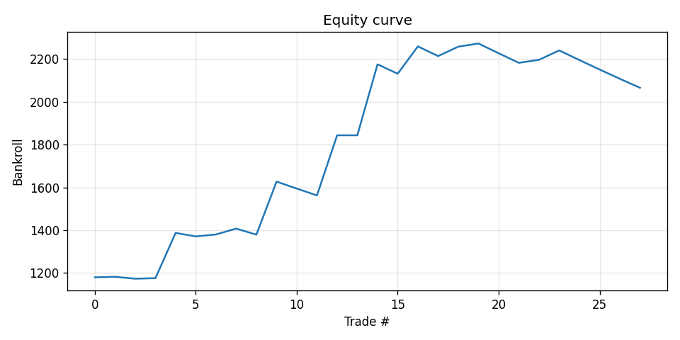
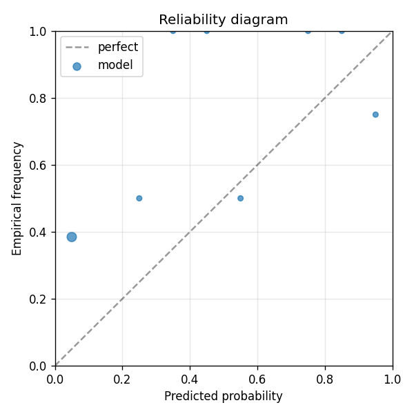

Model A baseline for the dual A vs B PoC. Predicts whether reported EPS exceeds analyst consensus estimate, for 30 small/mid-cap retail-favorite tickers across 2022-2024 quarters (~360 events). Uses ONLY numerical features: prior surprises, realized vol, trailing returns at multiple horizons, sector ETF return, days since last earnings, EPS estimate. No text. p_market baseline = the prior 4-quarter beat rate per ticker (defaults to 0.60 sandbagging prior). Compare to earnings-beatmiss-B (same data, same model class) which adds Voyage- embedded news_scraper text features.
| metric | value |
|---|---|
| brier_model | 0.3031639510428366 |
| brier_market | 0.29562499999999997 |
| brier_improvement | -0.007538951042836639 |
| accuracy_model | 0.5714285714285714 |
| accuracy_market | 0.6428571428571429 |
| n_events | 28 |
| n_trades | 27 |
| hit_rate | 0.5185185185185185 |
| gross_return | 1.065965443098015 |
| net_return | 1.065965443098015 |
| sharpe | 1.8317568736776448 |
| max_drawdown | -0.09115320079030723 |
| label_shuffle_brier_improvement | null |

